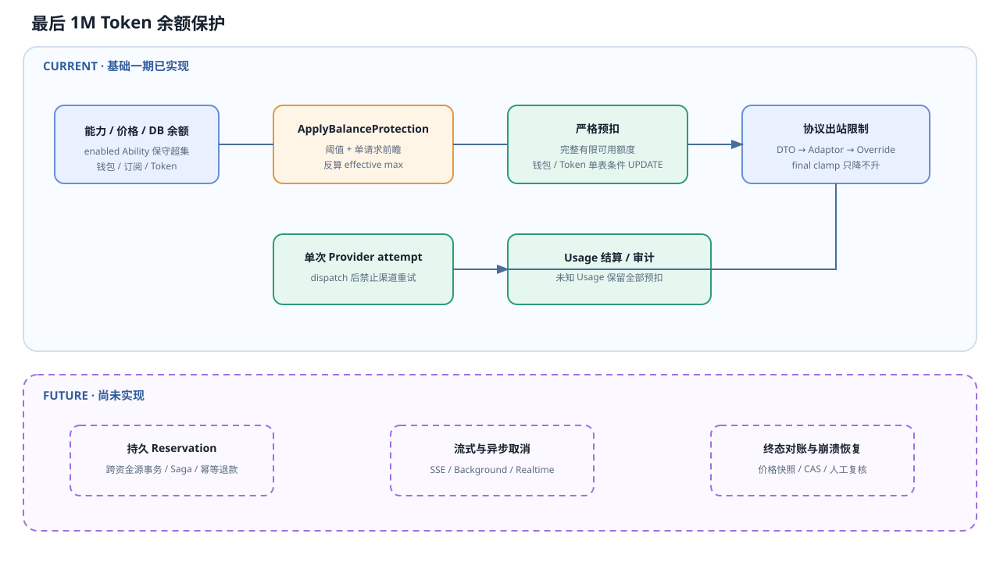
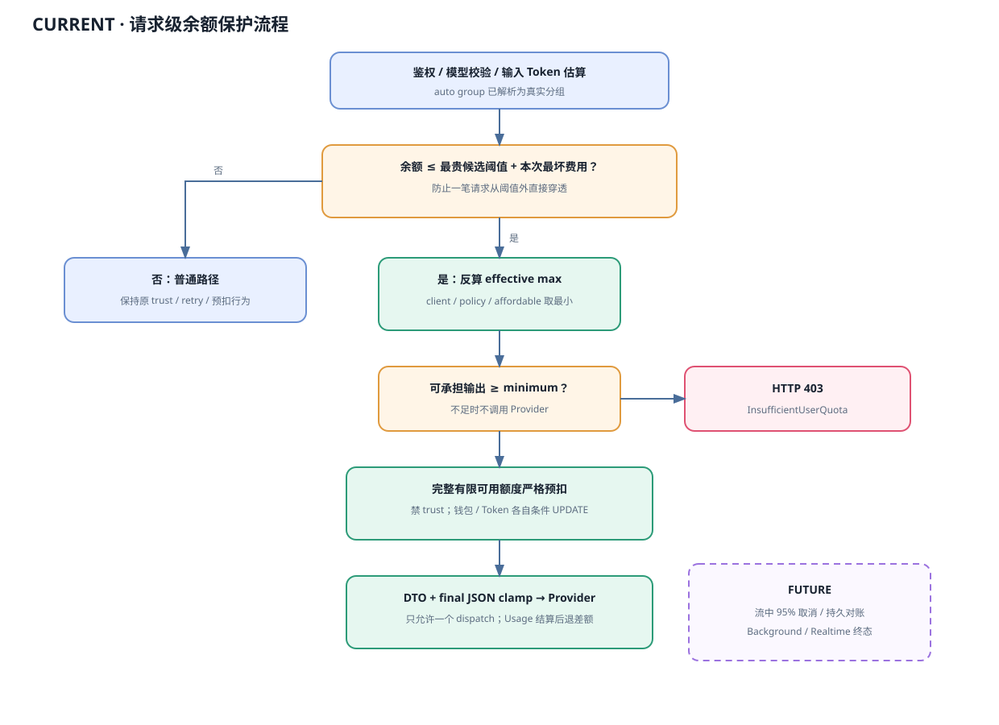
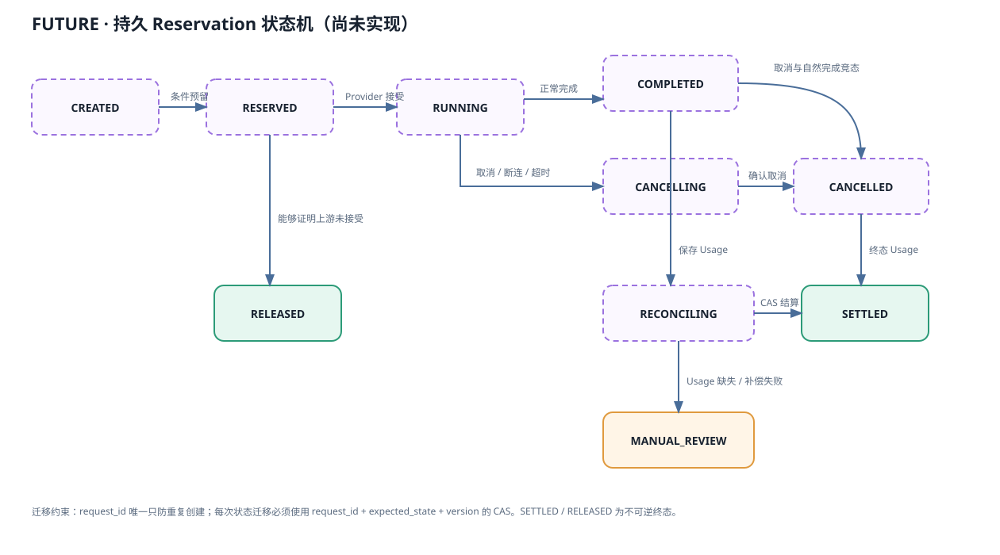

最后 1M Token 余额保护与 max-token 技术方案
当一笔请求可能进入“最贵可用模型输出 1M Token”的风险区时，网关提前切换到严格保护模式：按本次请求价格反算输出上限，分别对钱包与有限 Token 做数据库条件扣减，把有效上限写入上游协议。持久 Reservation、主动取消和跨进程对账属于后续阶段。
执行摘要
“最后 1M Token”是进入严格模式的资金风险阈值，不是单请求可以输出 1M Token，也不是一百万 quota 单位。
阈值加一笔请求前瞻
当前实现扫描用户可用分组内启用的 Ability 作为保守超集；当余额已在阈值内，或本次最坏费用可能跨入阈值时，提前进入保护区。
本次模型决定允许输出多少
进入保护区后，使用本次请求模型的价格反算 effective_max_tokens，不会一直按最贵模型价格压缩所有请求。
保护区串行化余额风险
第一阶段预扣完整有限可用额度，并分别使用钱包/Token 条件 UPDATE；竞争失败直接 403。两种资金资源尚不是同一事务。
不把未知当作零
已发起上游请求后发生错误或 Usage 缺失时保留全部严格预扣，并禁止第二次渠道 dispatch；主动取消和持久对账仍是后续能力。
第一阶段安全边界：命中保护后，单次请求不会因渠道重试产生第二笔上游费用；钱包和有限 Token 各自不会被条件扣减成负数；无法确认 Usage 时不退款。跨表崩溃一致性、Provider 私有字段全覆盖和持久恢复尚未完成。
实现边界：第一阶段已经落地阈值计算、DTO 限制、出站二次 Clamp、输出倍率预扣修正、保护区关闭 trust、钱包与有限 Token 的条件扣减和管理员审计。持久 Reservation、进程崩溃恢复、流中主动取消、Realtime 逐响应预算与自动退出滞回仍是后续阶段，本文用“后续设计”明确标记，不能把目标状态机误认为当前运行时状态。
当前能力与目标能力
| 环节 | 当前代码事实 | 本方案目标 |
|---|---|---|
| 输入估算 | controller/relay.go:154 调用 EstimateRequestToken。 | 继续复用，并冻结本次定价快照。 |
| 未传 max | 保护区内由 ApplyBalanceProtection 反算并写入有效上限；保护区外保持原行为。阶梯表达式仍用 8192 做普通预扣回退。 | 后续补充模型级硬上限元数据。 |
| 输出预扣 | 普通倍率已拆为输入费用和 max × ModelRatio × CompletionRatio × GroupRatio 输出费用。 | 补充缓存、工具和 reasoning 的统一保守缓冲。 |
| 钱包/Token 预扣 | 保护区调用 DecreaseUserQuotaIfEnough / DecreaseTokenQuotaIfEnough，同步条件更新并检查 RowsAffected。 | 把两种额度和持久 Reservation 合并为一个事务/Saga。 |
| 信任旁路 | 保护区设置 ForcePreConsume=true，BillingSession.shouldTrust 不再跳过预扣。 | 已完成。 |
| 协议上限 | 解析 DTO 先写一次；Adaptor 与 param_override 后调用 EnforceBalanceProtectionLimit 再写一次。严格模式关闭 BodyStorage 原样透传。 | 已覆盖 OpenAI、Responses、Claude、Gemini。 |
| 同步流取消 | 客户端断开后 StreamScannerHandler 关闭 resp.Body；请求响应头前未绑定下游 Context。 | 每次上游尝试使用可取消 Context，预算熔断可主动取消。 |
| Background | Responses DTO 没有接收 background；保护命中后关闭 raw pass-through 并重建标准 DTO，字段会被丢弃，但尚无专用拒绝错误。 | 后续应显式解析并拒绝，完成 Cancel/终态查询后再开放。 |
| 最终结算 | SettleBilling 已支持补扣/退款，但会话状态主要在内存。 | Usage、取消和补偿通过持久状态机恢复。 |
详细风险证据见《余额击穿风险与计费一致性》。本文以“已实现”和“后续设计”区分代码事实；配置默认关闭，升级后不会自动改变线上请求。
真实场景：为什么选最后 1M
用户可用模型： cheap-model 输出价格 = 2 quota / 1K tokens pro-model 输出价格 = 20 quota / 1K tokens 最贵模型 1M 输出成本： 20 × 1000 = 20,000 quota 用户当前可用额度： 19,000 quota 结论： 用户进入严格保护区。 如果本次请求 cheap-model，仍按 cheap-model 的单价反算输出上限； pro-model 只用于判断“风险区已经到达”，不会替 cheap-model 定价。
1M 是管理员可调的风险窗口。配置以“万 Token”为单位，默认值 100，运行时换算为 100 × 10,000 = 1,000,000 Token。它让高余额阶段保持现有体验，在接近资金底线时牺牲最长输出和部分性能，以换取可证明的损失边界。
阈值不能直接读取页面展示的美元、人民币或 TOKENS 数值。内部判断必须统一使用 quota 单位，所有乘法和换算使用 common.Quota*Checked 系列，保留饱和审计。
范围与非目标
本方案覆盖
- 文本生成请求的严格输出预算。
- 钱包、订阅和访问 Token 的可用额度边界。
- 多请求并发条件预留与渠道重试复用。
- Chat、Responses、Claude、Gemini 的统一输出上限。
- 钱包、订阅资金可用量和有限访问 Token 的联合边界。
不直接套用 max-token
- Embeddings、Rerank：按输入 Token 预扣，没有生成上限。
- 图片：按
n、尺寸、质量等边界控制。 - 视频、音乐和异步任务：按时长、分辨率、次数全额预扣。
- 固定按次价格：作为完整单次费用参与保守阈值；不换算成每 Token 单价。
术语和安全不变量
| 术语 | 定义 | 是否写入上游 |
|---|---|---|
protection_threshold | 最贵可用模型输出 N Token 的 quota 成本乘安全系数。 | 否 |
available_quota | 钱包/订阅可用额度与有限 Token 可用额度的较小值，并扣除未结算风险。 | 否 |
estimated_output_tokens | 用于价格估算和预扣的预计输出量。 | 否 |
affordable_output_tokens | 当前预算按本次模型输出单价能够承担的最大 Token。 | 否 |
effective_max_tokens | 客户端、模型、管理员策略和可承担上限四者的最小值。 | 是 |
reservation | 调用 Provider 前原子锁定的最大可消费额度。 | 否 |
必须始终成立
- 保护区内，最坏请求费用不得大于成功预留的额度。
- 同一个请求的渠道重试只能复用一次预扣。
- 渠道重试复用同一 Reservation，不能再次预扣。
- 客户端断开只改变传输状态，不直接等于计费退款。
- 本地已发 Cancel 不等于上游已停止，也不等于 Usage 为零。
- 当前内存退款不是崩溃可恢复的持久 Reservation；后续状态机落地前不能宣称跨进程幂等。
总体架构
图例：阈值决策、单表条件扣减、协议上限和结算是一阶段现状；价格快照、幂等预留记录、流式观察器、持久状态和取消对账均为后续目标。

图 1：最后 1M Token 余额保护总体架构。
如何读图
- 当前直接读取热配置和数据库事实；不可变价格快照是后续能力。
- 预算决策器产生进入/退出模式、有效上限、预留额度和审计原因。
- 当前 BillingSession 在内存中管理生命周期，钱包和有限 Token 分别条件扣减；持久化联合 Reservation 是后续目标。
- 协议层把同一个有效上限写入真实上游字段，预扣和上游硬限制不能使用两个不同值。
- 当前没有流中预算观察器；Usage 未知时保留严格预扣，主动取消与持久对账是后续目标。
阈值算法：何时进入保护区
1. 解析当前实现使用的保守模型集合
threshold_model_candidates = 用户可用分组集合 → abilities 表中 enabled=true 的 distinct(group, model)
第一阶段故意不按当前 Token 白名单缩小集合，避免换 Token 绕过；但也尚未 join 渠道 status、按请求路径或文本协议能力过滤，因此可能把无关 Ability 算入并保守拒绝。当前不缓存此集合；精确能力快照属于后续优化。
2. 将价格归一到每 1M 输出 Token
effective_output_quota_per_token = output_unit_price × model_ratio × completion_ratio × group_ratio × request-independent provider ratios threshold_tokens = balance_protection_threshold_10k_tokens × 10,000 protection_threshold = max(effective_output_quota_per_token) × threshold_tokens × safety_ratio
免费模型输出价格为零。固定按次模型以完整单次费用参与候选，不换算为 1M 输出 Token。Tiered Expression 必须配置 USD/1M 保守上界；候选价格缺失会在阈值判断前 fail closed。
3. 计算真实可用额度
funding_available = wallet_available 或 subscription_available token_available = TokenUnlimited ? +∞ : token.remain_quota available_quota = min(funding_available, token_available)
当前从数据库读取钱包、活跃订阅和有限 Token，已同步扣掉的预扣自然反映在余额中。尚无活动 Reservation 风险账本。
4. 当前触发规则与后续滞回
当前进入： available_quota ≤ protection_threshold + current_request_worst_quota 当前退出： 每次请求重新计算；超过前瞻边界即不激活 后续建议： 用 exit_ratio 构造跨请求滞回状态
请求主流程

图 2：请求级余额保护决策。图中的流式 95% 取消、未结算风险账本和持久原子 Reservation 是后续目标；当前在严格模式预扣完整有限可用额度并只允许一次上游 attempt。
流程使用说明
- 估输入：在当前
EstimateRequestToken之后运行，不改变鉴权、模型校验和敏感词检查顺序。 - 做决策：
ApplyBalanceProtection把有效上限、阈值、权威可用额度和最贵模型写入本次RelayInfo，渠道重试不得重新放大。 - 第一次写 DTO：在
ModelPriceHelper前把有效上限写入解析后的 DTO，使定价和预扣看到同一个 max，并保留指针字段的缺失/显式值语义。 - 算最坏费用：分别计算输入费用和
effective max × CompletionRatio的最大输出费用，不能复用当前prompt + max的普通倍率公式。 - 严格预留：当前预扣完整有限可用额度，钱包或有限 Token 条件更新竞争失败就返回 403；不自动重算。
- 最终出站 Clamp：标准 OpenAI/Responses/Claude/Gemini 字段和已登记的常见 Provider 字段只会被压低。保护命中时 raw PassThrough 被关闭并由 DTO 重建，未知扩展字段可能丢失。
- 结算：正常完成按最终 Usage 退还差额；已 dispatch 后错误或 Usage 缺失保留完整预扣并写管理员审计。持久对账尚未实现。
请求级预算公式
spendable_quota =
available_quota
- estimated_input_quota
- fixed_request_quota
- tool_reserve_quota
- reasoning_and_cancel_buffer
affordable_output_tokens =
floor(spendable_quota / request_output_quota_per_token)
effective_max_tokens =
min(
client_max_tokens_or_infinity,
protection_zone_policy_max_tokens,
affordable_output_tokens
)
当前没有通用模型级 max-output 元数据。Claude 入口在客户端未传 max 时会额外取配置默认值；其他模型仍依赖站点保护区上限和 Provider 自身校验。
如果 spendable_quota ≤ 0，或者 effective_max_tokens 小于最低可用输出，直接返回额度不足。保护目标优先于“至少返回一点内容”，因此默认不自动放宽到 64 Token。
单请求算例
权威可用额度 10,000 quota
输入和缓存写入预计费用 2,000 quota
工具与取消安全缓冲 1,000 quota
本次模型输出价格 2 quota/token
spendable_quota 7,000 quota
affordable_output_tokens 3,500 tokens
客户端 max_tokens 8,000
管理员上限 4,096
effective_max_tokens = min(8000, 4096, 3500)
= 3,500
上游收到 3500，预扣也按 3500 的最坏费用计算。客户端原值仅用于审计，不能继续影响上游转换。普通倍率公式必须拆成输入和输出两部分：
input_quota = prompt_tokens × model_ratio × group_ratio worst_output_quota = effective_max_tokens × completion_ratio × model_ratio × group_ratio reserved_quota = input_quota + worst_output_quota + cache/image/audio/tool/fixed/buffer
并发算例
余额 10,000；A、B 都初算需要预留 7,000 A 条件 UPDATE 成功，余额变 3,000 B 条件 UPDATE RowsAffected=0 B 条件 UPDATE RowsAffected=0： 第一期直接返回 403，不重算、不调用 Provider
协议字段映射与适用边界
| 入口 | 当前请求 DTO | 有效上限写入 | 注意事项 |
|---|---|---|---|
| OpenAI Chat/Completions | GeneralOpenAIRequest | 优先 max_completion_tokens，兼容 max_tokens | 必须明确两字段同时出现时的优先级；Adaptor 转换测试覆盖。 |
| OpenAI Responses | OpenAIResponsesRequest | max_output_tokens | 推理 Token 可能计入输出预算；当前 background 尚未完整支持。 |
| Claude Messages | ClaudeRequest | max_tokens | 最终 Clamp 会检查 thinking.budget_tokens < max_tokens；预算冲突时在调用 Provider 前拒绝，不能让 Thinking Adapter 把上限重新抬高。 |
| Gemini | GeminiChatRequest | generationConfig.maxOutputTokens | 单请求与 requests[] batch 均逐项 Clamp；兼容 camelCase/snake_case 解析。 |
| Responses Compact | OpenAIResponsesCompactionRequest | 未实现 | 启用总开关后显式 fail closed，不允许静默绕过。 |
| Realtime | WebSocket 客户端事件 | 未实现 | 启用总开关后握手流程返回不支持错误；逐 response.create 预算属于后续阶段。 |
| Embedding/Rerank | 各自 DTO | 第一阶段不适用 | 保持原有输入计费、trust 和预扣路径；后续应增加“无输出上限但严格预扣”的模式。 |
| 图片/任务 | ImageRequest / TaskAdaptor | 不适用 | 沿用 n、时长、尺寸和全额预扣边界。 |
当前 DTO 写入方式与后续 RelayKit 契约
第一阶段为了保持 relaykit/ 独立且不扩张公共接口，在根模块 service/balance_protection.go 对四种真实 DTO 做显式 type switch。这样代码路径直接、可测试，也不会让 RelayKit 依赖站点配置。若后续协议继续增加，可将相同能力下沉为以下可选接口：
type OutputTokenLimitRequest interface {
RequestedMaxOutputTokens() (*uint, bool)
ApplyMaxOutputTokens(limit uint)
}
由支持文本生成的 RelayKit DTO 实现可选接口，Controller 在 Adaptor 转换前统一调用。不要把根模块配置导入 relaykit/；接口只表达 DTO 能力，预算策略仍留在根模块，保证 RelayKit 可独立构建。
请求字段必须继续使用指针和 omitempty：字段缺失、显式 0 和显式正数不能在协议转换中被混成同一个状态。
为什么必须做两次 Clamp
第一次写入解析 DTO 是为了让 GetTokenCountMeta 和 PriceData 使用有效上限；第二次在最终出站 JSON 上只压低现有值，防止渠道 param_override 把 max 调大。保护命中后当前不会 patch 原始 BodyStorage，而是关闭 raw PassThrough 并重建标准 DTO。
parsed DTO clamp → PriceData / Reservation → Adaptor Convert → ParamOverride → final outbound clamp → Provider
最终 Clamp 不得抬高客户端、Adaptor 或渠道已设置的更小上限。当前覆盖标准协议字段、Gemini batch、Baidu 风格 max_output_tokens 和 Nova 风格 inferenceConfig.maxTokens；完整 Provider 字段矩阵仍需 Adaptor 级契约。
一期单表条件预扣与后续联合 Reservation
钱包条件扣减
UPDATE users SET quota = quota - :reserve WHERE id = :user_id AND quota >= :reserve;
有限 Token 条件扣减
UPDATE tokens
SET remain_quota = remain_quota - :reserve,
used_quota = used_quota + :reserve,
accessed_time = :now
WHERE id = :token_id
AND remain_quota >= :reserve;
两条语义在 SQLite、MySQL 和 PostgreSQL 均可通过 GORM 条件更新实现。保护路径必须同步写权威数据库并检查 RowsAffected==1，即使 BatchUpdateEnabled=true 也不能延迟批量扣减；Redis 只做失效/同步缓存，不能决定严格可用余额。
第一阶段的两次条件更新仍是顺序执行：Token 成功而钱包/订阅失败时由 BillingSession 进程内补偿。这能阻止单表余额变负，但不能覆盖两次更新之间进程崩溃。钱包和 Token 在同一主数据库时，第二阶段应在一个短事务中完成并同时创建/更新 Reservation；订阅路径则需统一事务或持久 Saga。
建议新增持久化记录
| 字段 | 用途 | 约束 |
|---|---|---|
request_id | 预留、取消、结算和退款的幂等键 | 唯一索引 |
user_id/token_id | 额度归属 | 普通索引 |
funding_source/source_id | wallet 或 subscription | 不可在运行中改变 |
reserved_quota/actual_quota | 最大预留与最终消费 | 非负、使用 int32 安全换算 |
state/version | 状态机 CAS | request_id + state + version 条件更新 |
price_snapshot | 模型、分组、倍率和配置版本 | 结算复用，不追随中途热更新 |
provider_request_id | 取消和对账 | 可空，拿到后持久化 |
lease_expires_at/last_error | 崩溃恢复和人工处理 | 清扫任务使用 |
当前 BillingSession 的 settled/refunded 等标志主要在内存，不能单独承担进程崩溃恢复；退款必须把“额度变化”和“Reservation 终态”放在同一事务中，避免重复加钱。
后续设计：持久计费状态机

图 3：第二阶段目标状态机，当前数据库中尚无该 Reservation 实体。传输连接断开不能直接跳到 RELEASED。
状态机使用说明
当前运行时只有 BillingSession 的内存状态（预扣、结算、退款）和数据库额度变更。下面的状态名称用于指导后续实现和排障建模，不是当前可查询的数据库状态。
| 迁移 | 触发事件 | 持久化动作 | 失败恢复 |
|---|---|---|---|
| CREATED → RESERVED | 钱包/Token/订阅原子预留成功 | 写 reserved quota、价格快照 | 任一步失败同事务回滚 |
| RESERVED → RUNNING | Provider 接受或已取得响应头/请求 ID | 记录 attempt 和 provider request ID | 重试复用同一 Reservation |
| RESERVED → RELEASED | 能够证明请求未被上游接受 | 同事务退还预留并写终态 | 重复释放 RowsAffected=0 |
| RUNNING → COMPLETED | 收到正常终态 Usage | 保存原始 Usage | 进入对账重试 |
| RUNNING → CANCELLING | 客户端断开、预算熔断或超时 | 记录取消原因和时间 | 后台重试取消/查询 |
| CANCELLING → CANCELLED | 上游确认 cancelled | 保存终态与 Usage | Usage 缺失仍不能退款 |
| COMPLETED/CANCELLED → RECONCILING | 计算实际费用 | 冻结 actual quota | 使用 price snapshot 重放 |
| RECONCILING → SETTLED | 补扣/退款事务成功 | 额度变化和状态一起提交 | 幂等重试 |
| RECONCILING → MANUAL_REVIEW | Usage 长期缺失或补偿持续失败 | 保留额度和管理员审计 | 人工确认后再结算 |
后续设计：SSE、Background、Realtime 取消机制
| 类型 | 预算触发动作 | 何时认为终止 | Usage 缺失策略 |
|---|---|---|---|
| 同步 SSE | 取消上游 request Context，并关闭 resp.Body | 读取终止或连接确认关闭 | 进入 USAGE_UNKNOWN/RECONCILING，不能仅按可见文本退款 |
| Responses Background | 调用 Provider Cancel API | 轮询到 cancelled/completed 终态 | 保持预留；超时进入人工/后台对账 |
| Realtime | 发送 response.cancel，有界等待 response.done | response.done(status=cancelled) | 等待超时则关闭 WS 并保留待对账额度 |
| 异步任务 | 仅在 Provider 支持时调用任务取消 | 轮询到明确终态 | 客户端断开不释放任务预扣 |
统一上游 Context
upstreamCtx, cancelUpstream :=
context.WithCancel(c.Request.Context())
defer cancelUpstream()
req, err := http.NewRequestWithContext(
upstreamCtx,
c.Request.Method,
fullRequestURL,
requestBody,
)
统一改造 DoApiRequest、DoFormRequest 和文本任务的请求创建路径，覆盖“客户端在响应头返回前断开”的窗口。每次渠道 attempt 可以有独立 child Context，但共享同一 Reservation。
后续设计：流式预算观察器
85% reservation：记录 warning、指标和审计 95% reservation：请求取消，进入 CANCELLING 100% reservation：不应依赖此点；上游硬 max 应先阻止到达
可见 SSE Token 无法完整代表隐藏 reasoning、缓存、工具和网络缓冲费用。因此 95% 是软防线，真正的主边界是“有效上限 + 最坏费用预留”。
当前 Responses DTO 注释为“在后台运行推理，暂时还不支持依赖的接口”。在显式 Cancel、终态查询和持久化 provider response ID 完成前，保护区内应拒绝 background=true，不能声称关闭 SSE 就能保护余额。
已实现配置
以下字段已注册到 setting/operation_setting/quota_setting.go，数据库 Option Key 由 quota_setting. 加 JSON 字段名组成，可通过统一配置机制热加载。数值和 JSON Map 在 model.validateOptionValue 写库前校验。
| 代码字段 / Option Key | 默认值 | 生效阶段 | 热加载 | 风险与说明 |
|---|---|---|---|---|
BalanceProtectionEnabledquota_setting.balance_protection_enabled | false | Billing decision | 是 | 总开关；建议先观察定价完整性再开启。 |
BalanceProtectionThreshold10KTokensquota_setting.balance_protection_threshold_10k_tokens | 100（万 Token） | Threshold | 是 | 运行时乘以 10,000；默认对应最后 100 万个“最贵模型输出 Token”的风险区，不是单请求 max。 |
BalanceProtectionSafetyRatioquota_setting.balance_protection_safety_ratio | 1.10 | Threshold / budget | 是 | 有限数且 ≥ 1；同时扩大进入阈值并收紧可承担输出。 |
BalanceProtectionMinimumOutputquota_setting.balance_protection_minimum_output_tokens | 64 | Decision | 是 | 余额反算上限低于此值时返回 403；客户端主动请求更小值不受此规则拒绝。 |
BalanceProtectionMaximumOutputquota_setting.balance_protection_maximum_output_tokens | 1000000 | Decision | 是 | 仅在保护激活时生效的站点上限，取值 1–1,000,000；后续应再与模型元数据取最小值。 |
BalanceProtectionTieredPriceCeilingsquota_setting.balance_protection_tiered_price_ceilings | {} | Threshold / tiered | 是 | 并发安全 Map，值为模型保守输出价 USD/1M；任何用户可用 tiered_expr 模型缺失上界时 fail closed。 |
启用前置条件：BatchUpdateEnabled 必须为 false。保护逻辑发现批量延迟扣减开启时会在调用 Provider 前 fail closed，因为此模式下数据库余额不是实时权威值。
后续设计参数（尚未实现）
ExitRatio、StreamWarnRatio、StreamCancelRatio、ReasoningReserveRatio、ReconcileTimeoutSeconds 和持久 Reservation 配置仍属于第二阶段，不可写入 Option 并期待生效。
代码落点与实现状态
| 模块 | 建议改动 | 关键约束 |
|---|---|---|
setting/operation_setting/quota_setting.go | 已实现 6 个保护配置 | 默认关闭，热更新值写库前验证。 |
service/balance_protection.go | 已实现模型集合、最贵阈值、资金可用量、请求预算和 DTO 写入 | 无缓存，以保护区安全优先。 |
controller/relay.go | 已在输入估算后、定价前调用保护决策 | 严格区预扣完整有限余额；dispatch 后禁止渠道重试。 |
relay/common/balance_protection.go 与协议 Handler | 已实现 ParamOverride 后最终 Clamp；保护区关闭原始 Body 透传 | 渠道配置不能提高决策上限。 |
relay/helper/price.go | 已拆分输入/输出预扣并应用 CompletionRatio | 实际结算公式保持不变。 |
service/billing_session.go | 已在保护区关闭 trust，并调用严格钱包/Token 扣减 | 持久 Reservation 尚未实现。 |
model/user.go | 已实现 DecreaseUserQuotaIfEnough | 条件更新、同步数据库、检查 RowsAffected。 |
model/token.go | 已实现 DecreaseTokenQuotaIfEnough | 有限 Token 条件扣减，缓存随后同步。 |
relay/channel/api_request.go | Future：请求绑定可取消 Context | 响应头前断开也能传播。 |
relay/helper/stream_scanner.go | Future：流式预算观察与取消原因 | 不把可见 Token 当最终 Usage。 |
service/reconcile_*.go | Future：终态查询、超时清扫和幂等补偿 | 多实例 CAS 抢占，失败可人工处理。 |
错误、响应和可观察性
当前错误语义
| 场景 | 当前行为 | 说明 |
|---|---|---|
| 余额不足以覆盖输入或最低输出 | HTTP 403，ErrorCodeInsufficientUserQuota | 不是 429；底层消息说明不足原因。 |
| 条件预扣竞争失败 | 直接返回 403，不重算 | 不会调用 Provider。 |
| Realtime / Responses Compact | 总开关启用时返回“不支持该 RelayFormat” | 防止未覆盖协议静默绕过。 |
| 已 dispatch 后错误或 Usage 缺失 | 保留完整严格预扣 | 尚无后台对账。 |
当前审计字段
other.admin_info.balance_protection: threshold_quota available_quota most_expensive_model effective_max_tokens usage_unknown
普通用户日志会剥离管理员信息。当前没有有效 max 响应头，也没有价格版本、取消原因或对账状态字段。
后续建议指标（尚未实现）
balance_protection_decisions_total{mode,reason,model}balance_protection_clamped_total{protocol,model}billing_reservation_conflicts_total{source}billing_reconciliation_pendingstream_budget_cancellations_total{protocol}quota_overdraft_amount：目标是保护区流量长期为零。
实施状态与后续阶段
| 阶段 | 交付 | 是否改变客户端行为 | 退出条件 |
|---|---|---|---|
| 已实现基础一期 | 前瞻阈值、标准字段 Clamp、完整有限余额预扣、单表条件扣减、禁 trust/重试、未知 Usage 保留 | 可能截短输出或并发 403 | 总开关默认关闭，先完成价格灰度审计 |
| Future 1：协议矩阵 | Adaptor 声明真实输出字段，显式 Background 拒绝，模型级 max 元数据 | 减少 Provider 兼容错误 | 全部启用渠道转换测试通过 |
| Future 2：持久 Reservation | 跨资金源事务/Saga、幂等退款、崩溃恢复 | 账务恢复更可靠 | 三数据库故障注入通过 |
| Future 3：流式与异步 | SSE 止损、Background/Realtime Cancel、终态对账 | 可能提前终止 | 取消尾部和待对账量可控 |
当前总开关默认 false，可立即回退旧行为；目前尚无 Reservation 表或后台对账任务需要迁移。
当前回归与后续验收矩阵
- 当前已测：配置边界、四类 DTO、Gemini batch、最终 JSON 只降不升、Claude thinking 冲突、Provider 嵌套字段、CompletionRatio 预扣、SQLite 条件扣减和主决策算例。
- 当前行为：
BatchUpdateEnabled=true时保护路径 fail closed，不调用 Provider。 - 仍需环境验收：MySQL/PostgreSQL 多连接竞争、Token 成功后 funding 失败补偿、wallet_first 并发回退。
- Future：request_id 幂等、崩溃注入、持久退款、SSE 取消、Background/Realtime 终态对账。
常见误区
| 误解 | 正确理解 |
|---|---|
| 最后 1M 等于每个请求可以输出 1M | 它只决定何时进入严格保护。 |
| 进入后所有模型都按最贵模型限额 | 最贵模型决定触发，本次模型决定 affordable output。 |
| 预扣估算值就是上游 max | 只有明确写入 DTO 的 effective max 才是硬限制。 |
| 动态 max 足以解决并发击穿 | 当前严格区还会预扣完整有限余额并做单表条件扣减；跨资金源原子性仍需持久 Reservation。 |
| 关闭 SSE 后立即不再收费 | 取消有传播尾部，已产生 Usage 仍结算；Background 还会继续运行。 |
| 可见输出 Token 等于实际计费输出 | 推理、工具、缓存和未送达数据可能造成差异。 |
| 余额不足应该返回 429 | 429 是频率限制；余额保护建议返回 403 和明确错误码。 |
本章自检问题
普通开发者
- 1M 风险阈值和单请求输出上限有什么区别？
- 为什么进入保护区后可能修改客户端的 max？
- 什么情况下直接拒绝而不是 clamp？
- 为什么取消后仍可能产生费用？
维护者
- 十个并发请求是否只能有可支付者预留成功？
- 价格中途热更新时，结算使用哪个版本？
- 渠道重试是否复用同一 Reservation？
- 进程在 RUNNING/CANCELLING 崩溃后如何恢复？
- 无最终 Usage 时如何保守结算？
- 三个数据库的条件更新和退款幂等是否一致？